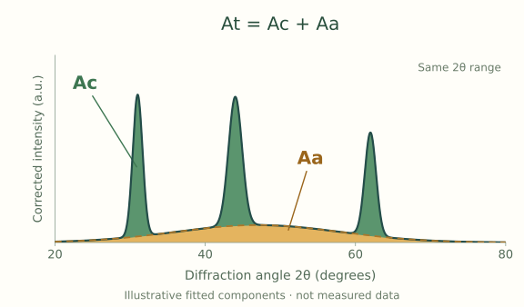

RESEARCH TOOLS / X-RAY DIFFRACTION
XRD Calculators
Bragg’s law, d-spacing and crystallinity.
Read the measurement principle ↗Part of the Tools collection
CALCULATE / X-RAY DIFFRACTION
Your values. Instant results.
Enter known quantities below. Calculations run in your browser and update automatically.
d-spacing & diffraction angle
Calculate interplanar spacing, peak position, or wavelength from nλ = 2d sin θ.
Interplanar spacing d
1 nm = 10 Å. Length values convert automatically when you change units. d-spacing is the separation of the diffracting planes; it is not automatically a unit-cell lattice parameter.
Method: IUCr · Bragg’s law ↗Degree of crystallinity
Estimate the crystalline contribution from integrated areas of a separated XRD pattern.
Estimated crystallinity Xc
How to obtain the areas
- Choose the same diffraction-angle range for all integrations and apply a consistent background treatment.
- Separate the crystalline peaks from the broad amorphous contribution using an appropriate fitting or integration method.
- Enter the sum of crystalline peak areas, then either the total corrected area or the amorphous area.
A single peak position or peak height cannot determine the crystallinity of a pattern.
This is an approximate area-based index, not a calibrated crystalline mass fraction. Background selection, peak/halo separation, preferred orientation, composition, and the selected 2θ range affect the estimate.
Integration method: University of Utah MCL ↗Crystallinity: what do Ac and At mean?
A sharp peak sits on top of the broad amorphous signal. We separate these contributions and integrate their areas over the same 2θ range.

At = total area. Add the green crystalline regions and the gold amorphous region, after background correction.
- Ac
- Crystalline area: the sum of all separated crystalline peak areas. In this example, Ac = 60.
- Aa
- Amorphous area: the area of the broad fitted halo. In this example, Aa = 40.
- At
- Total area: crystalline + amorphous, so At = 60 + 40 = 100.
The zero baseline here is after background subtraction. The dashed curve separates the fitted amorphous contribution from the crystalline peaks. Peak height is not peak area.